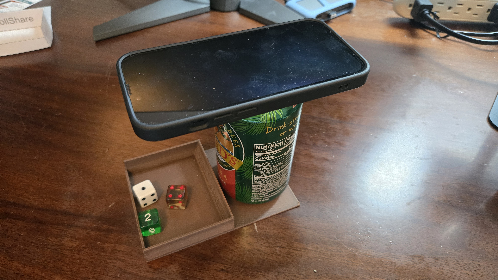
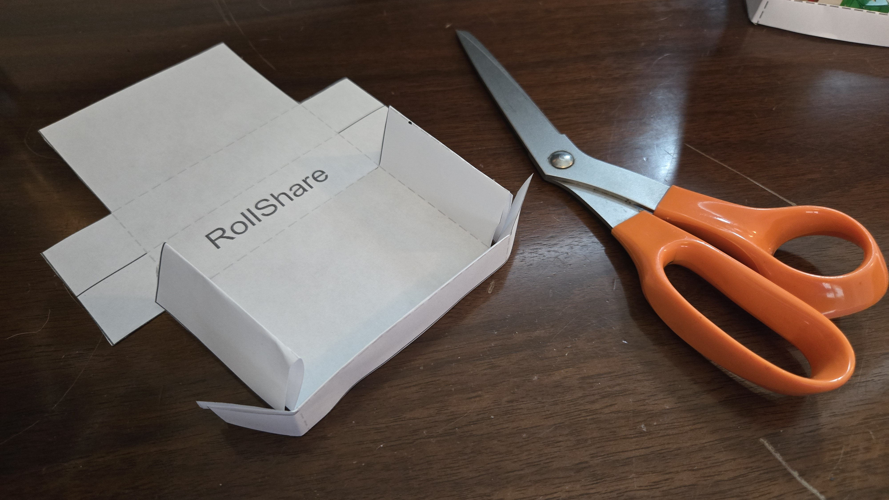
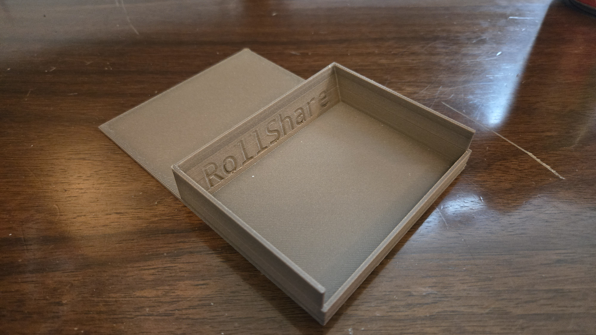

Overview
The goal of the RollShare Dice Tray is to create a stable place for you to easily access your dice during gameplay and to securely rest your phone. You'll be reaching for your dice often, so put this somewhere convenient you can grab without thinking. This page provides a low-cost DIY way to set this up quickly at home. For this you will need:
A printer (either a 3D printer or an inkjet/laser printer) to print the tray at home.
A soda can. A full, unopened can is recommended — the weight keeps the dice tray stable and provides a better platform for your phone.
This first image is to show you what the setup will look like when we are done and you're in game.
Paper tray: side view (notice the soda can weight helps hold the tray in place)
3D printable STL — For a sturdy tray, print on any standard 3D printer.

3D printed tray: side view (notice the soda can weight helps hold the tray in place)
Assembly tips:
For the PDF: Don't stress about which paper to use — even the thinnest printer paper will work to get you started. Fold along the lines and tape the corners.

Paper tray: partially assembled from PDF template so you can see the folds
For the STL: Print with at least 10% infill. No supports needed. Add felt or foam to the bottom for quieter rolls.

3D printed tray: partially assembled so you can see how it comes together
Don't have a printer?
Any shallow box or tray works! The key is to keep dice visible and contained in the camera view and hold the camera about the height of a soda can away from the table surface.